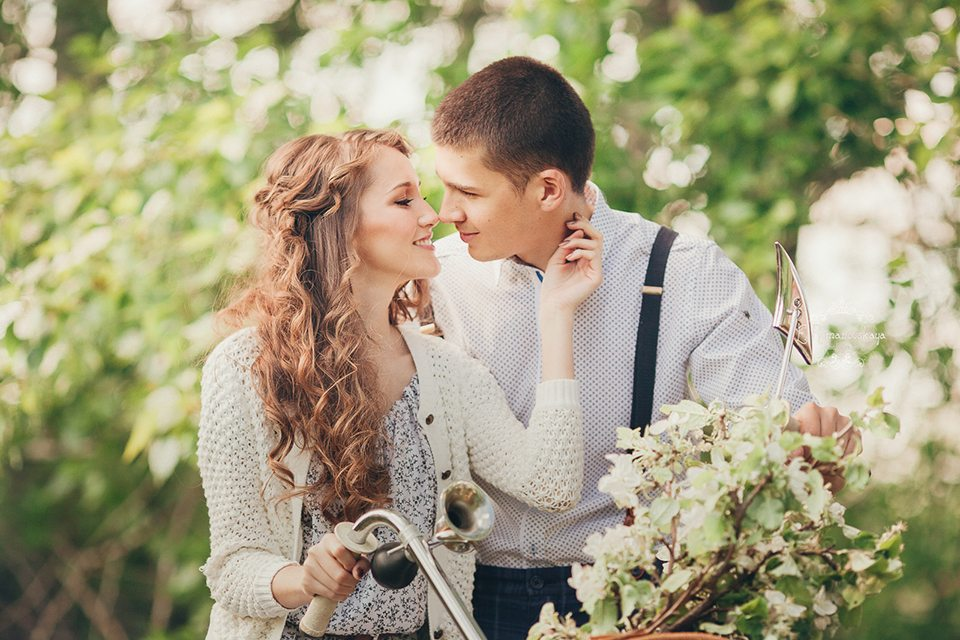

Дорогой Гость!
Мы рады сообщить вам, что 24.07.2026 состоится наш самый прекрасный и очень важный для нас день - день нашей свадьбы!
Приглашаем вас разделить с нами радость этого чудесного дня.

Там, где посеяна любовь, расцветёт радость!
Сергей
Меню
Меню разнообразно, поэтому сообщите нам заранее, если у вас есть аллергия или особые предпочтения. Мы обязательно постараемся учесть важные детали.
Поздравления
Наша свадьба - это в первую очередь большой и веселый праздник. Мы хотим больше танцевать, общаться и веселиться, поэтому решили отказаться от долгих официальных речей.
Если вы хотите поздравить нас публично, мы просим сделать это в творческой форме: подтвердите присутствие, мы добавим вас в чат с ведущим, а дальше вы обсудите с ним номер, сценку или сюрприз.
Творческий формат - исключительно по любви и желанию. Если вы хотите просто отдохнуть и побыть зрителем на нашей тусовке, мы будем счастливы разделить этот день вместе с вами.
Пожелания по подаркам
Нам приятно будет любое ваше внимание. Если захотите подарить конверт, мы с благодарностью примем его в день свадьбы.
Примечание
Пример, пример, пример, пример.
Подтверждение
Пожалуйста, подтвердите своё присутствие до 20 июня 2026 года.